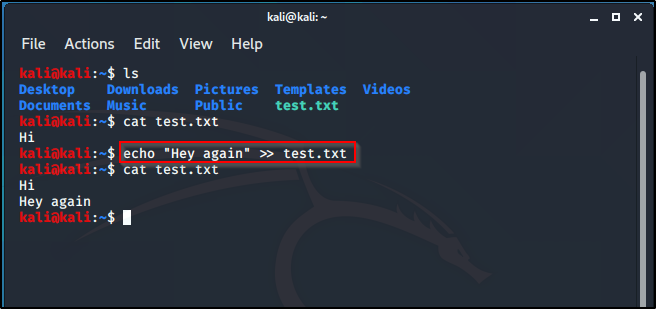

Viewing, creating and editing files.
We already looked at the echo command, and if you recall, the echo is used to create a file. We can use echo to write to a file.
cat command prints out to the screen what is in a file.
To append a file: echo "text to add" >> nameofthefile.txt

The above shows how to append (add) to a file and the cat command prints the contents of said file.
Another to create files is the touch command.
Below is how it works:

The created file in the above example is empty, and we could use the echo command to append text into it. An alternative would be to use a tool called nano, it's a terminal based text editor. There are other text editors, like vim or vi, I prefer nano, but I encourage you to play around and try the other text editors and pick a favourite.
So, to start up nano, use the command nano newfile.txt, it'll open up the terminal text editor and you cantype whatever you want. We'll be using nano alot, to create scripts, create python scripts, and to edit shell code as we get into exploit development.


From the above, you can seethat thecat result printed out what was typed in nano.
Another way of editing it is using a Graphical Interface, we can use gedit newfile.txt. This is perfect for those who don't like using the terminal to create or append files.
File can be created, viewed and edited using echo, touch, nano, gedit and cat. You should definately play around with these tools and command, familiarize yourself with them, 'cause you'll be using them in almost everything.